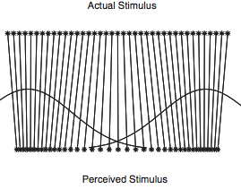

In the chapter on Hierarchical Models, we saw the power of probabilistic inference in learning about the latent structure underlying different kinds of observations: the mixture of colors in different bags of marbles, or the prototypical features of categories of animals. In that discussion we always assumed that we knew what kind each observation belonged to—the bag that each marble came from, or the subordinate, basic, and superordinate category of each object. Knowing this allowed us to pool the information from each observation for the appropriate latent variables. What if we don’t know a priori how to divide up our observations? In this chapter we explore the problem of simultaneously discovering kinds and their properties – this can be done using mixture models.
Imagine a child who enters the world and begins to see objects. She can’t begin to learn the typical features of cats or mice directly, because she doesn’t yet know that there are such kinds of objects as cats and mice. Yet she may quickly notice that some of the objects all tend to purr and have claws, while other objects are small and run fast—she can cluster the objects together on the basis of common features and thus form categories (such as cats and mice), whose typical features she can then learn.
To formalize this learning problem, we begin by adapting the bags-of-marbles examples from the Hierarchical Models chapter. However, we now assume that the bag that each marble is drawn from is unobserved and must be inferred.
var colors = ['blue', 'green', 'red']
var observedData = [{name: 'obs1', draw: 'red'},
{name: 'obs2', draw: 'red'},
{name: 'obs3', draw: 'blue'},
{name: 'obs4', draw: 'blue'},
{name: 'obs5', draw: 'red'},
{name: 'obs6', draw: 'blue'}]
var predictives = Infer({method: 'MCMC', samples: 30000}, function(){
var phi = dirichlet(ones([3, 1]))
var alpha = 0.1
var prototype = T.mul(phi, alpha)
var makeBag = mem(function(bag){
var colorProbs = dirichlet(prototype)
return Categorical({vs: colors, ps: colorProbs})
})
// each observation (which is named for convenience) comes from one of three bags:
var obsToBag = mem(function(obsName) {return uniformDraw(['bag1', 'bag2', 'bag3'])})
var obsFn = function(datum){
observe(makeBag(obsToBag(datum.name)), datum.draw)
}
mapData({data: observedData}, obsFn)
return {sameBag1and2: obsToBag(observedData[0].name) === obsToBag(observedData[1].name),
sameBag1and3: obsToBag(observedData[0].name) === obsToBag(observedData[2].name)}
})
viz.marginals(predictives)
We see that it is likely that obs1 and obs2 came from the same bag, but quite unlikely that obs3 did. Why? Notice that we have set alpha small, indicating a belief that the marbles in a bag will tend to all be the same color. How do the results change if you make alpha larger? Why? Note that we have queried on whether observed marbles came out of the same bag, instead of directly querying on the bag number that an observation came from. This is because the bag number by itself is meaningless—it is only useful in its role of determining which objects have similar properties. Formally, the model we have defined above is symmetric in the bag labels (if you permute all the labels you get a new state with the same probability).
Instead of assuming that a marble is equally likely to come from each bag, we could instead learn a distribution over bags where each bag has a different probability. This is called a mixture distribution over the bags:
var colors = ['blue', 'green', 'red']
var observedData = [{name: 'obs1', draw: 'red'},
{name: 'obs2', draw: 'red'},
{name: 'obs3', draw: 'blue'},
{name: 'obs4', draw: 'blue'},
{name: 'obs5', draw: 'red'},
{name: 'obs6', draw: 'blue'}]
var predictives = Infer({method: 'MCMC', samples: 30000}, function(){
var phi = dirichlet(ones([3, 1]))
var alpha = 0.1
var prototype = T.mul(phi, alpha)
var makeBag = mem(function(bag){
var colorProbs = dirichlet(prototype)
return Categorical({vs: colors, ps: colorProbs})
})
// the probability that an observation will come from each bag:
var bagMixture = dirichlet(ones([3, 1]))
var obsToBag = mem(function(obsName) {
return categorical({vs: ['bag1', 'bag2', 'bag3'], ps: bagMixture});
})
var obsFn = function(datum){
observe(makeBag(obsToBag(datum.name)), datum.draw)
}
mapData({data: observedData}, obsFn)
return {sameBag1and2: obsToBag(observedData[0].name) === obsToBag(observedData[1].name),
sameBag1and3: obsToBag(observedData[0].name) === obsToBag(observedData[2].name)}
})
viz.marginals(predictives)
Models of this kind are called mixture models because the observations are a “mixture” of several categories. Mixture models are widely used in modern probabilistic modeling because they describe how to learn the unobservable categories which underlie observable properties in the world.
The observation distribution associated with each mixture component (i.e., kind or category) can be any distribution we like. For example, here is a mixture model with Gaussian components:
var observedData = [{"name":"a0","x":1.5343898902525506,"y":2.3460878867298494},{"name":"a1","x":1.1810142951204246,"y":1.4471493362364427},{"name":"a2","x":1.3359476185854833,"y":0.5979097803077312},{"name":"a3","x":1.7461500236610696,"y":0.07441351219375836},{"name":"a4","x":1.1644280209698559,"y":0.5504283671279169},{"name":"a5","x":0.5383179421667954,"y":0.36076578484371535},{"name":"a6","x":1.5884794217838352,"y":1.2379018386693668},{"name":"a7","x":0.633910148716343,"y":1.21804947961078},{"name":"a8","x":1.3591395983859944,"y":1.2056207607743645},{"name":"a9","x":1.5497995798191613,"y":1.555239222467223},
{"name":"b0","x":-1.7103539324754713,"y":-1.178368516925668},{"name":"b1","x":-0.49690324128135566,"y":-1.4482931166889297},{"name":"b2","x":-1.0191455290951414,"y":-0.4103273022785636},{"name":"b3","x":-1.6127046244033036,"y":-1.198330563419632},{"name":"b4","x":-0.8146486481025548,"y":-0.33650743701348906},{"name":"b5","x":-1.2570582864922166,"y":-0.7744102418371701},{"name":"b6","x":-1.2635542813354101,"y":-0.9202555846522052},{"name":"b7","x":-1.3169953429184593,"y":-0.40784942495184096},{"name":"b8","x":-0.7409787028330914,"y":-0.6105091049436135},{"name":"b9","x":-0.7683709878962971,"y":-1.0457286452094976}]
var predictives = Infer({method: 'MCMC', samples: 200, lag: 100}, function(){
var catMixture = dirichlet(ones([2, 1]))
var obsToCat = mem(function(obsName) {
return categorical({vs: ['cat1', 'cat2'], ps: catMixture});
})
var catToMean = mem(function(cat) {
return {xMean: gaussian(0,1), yMean: gaussian(0,1)}
})
var obsFn = function(datum){
var mus = catToMean(obsToCat(datum.name))
observe(Gaussian({mu: mus.xMean, sigma: 0.01}), datum.x)
observe(Gaussian({mu: mus.yMean, sigma: 0.01}), datum.y)
}
mapData({data: observedData}, obsFn)
return catToMean(obsToCat('newObs'))
})
viz(predictives)
One very popular class of mixture-based approaches are topic models, which are used for document classification, clustering, and retrieval. The simplest kind of topic models make the assumption that documents can be represented as bags of words — unordered collections of the words that the document contains. In topic models, each document is associated with a mixture over topics, each of which is itself a distribution over words.
One popular kind of bag-of-words topic model is known as Latent Dirichlet Allocation (LDA, @Blei2003). The generative process for this model can be described as follows. For each document, mixture weights over a set of topics are drawn from a Dirichlet prior. Then topics are sampled for the document—one for each word. Each topic itself is associated with a distribution over words, and this distribution is drawn from a Dirichlet prior. For each of the topics drawn for the document, a word is sampled from the corresponding multinomial distribution. This is shown in the WebPPL code below.
///fold:
var expectationOver = function(topicID, results) {
return function(i) {
return expectation(results, function(v) {return T.get(v[topicID], i)})
}
}
///
var vocabulary = ['DNA', 'evolution', 'parsing', 'phonology'];
var eta = ones([vocabulary.length, 1])
var numTopics = 2
var alpha = ones([numTopics, 1])
var corpus = [
'DNA evolution DNA evolution DNA evolution DNA evolution DNA evolution'.split(' '),
'DNA evolution DNA evolution DNA evolution DNA evolution DNA evolution'.split(' '),
'DNA evolution DNA evolution DNA evolution DNA evolution DNA evolution'.split(' '),
'parsing phonology parsing phonology parsing phonology parsing phonology parsing phonology'.split(' '),
'parsing phonology parsing phonology parsing phonology parsing phonology parsing phonology'.split(' '),
'parsing phonology parsing phonology parsing phonology parsing phonology parsing phonology'.split(' ')
]
var model = function() {
var topics = repeat(numTopics, function() {
return dirichlet({alpha: eta})
})
mapData({data: corpus}, function(doc) {
var topicDist = dirichlet({alpha: alpha})
mapData({data: doc}, function(word) {
var z = sample(Discrete({ps: topicDist}))
var topic = topics[z]
observe(Categorical({ps: topic, vs: vocabulary}), word)
})
})
return topics
}
var results = Infer({method: 'MCMC', samples: 20000}, model)
//plot expected probability of each word, for each topic:
var vocabRange = _.range(vocabulary.length)
print('topic 0 distribution')
viz.bar(vocabulary, map(expectationOver(0, results), vocabRange))
print('topic 1 distribution')
viz.bar(vocabulary, map(expectationOver(1, results), vocabRange))
In this simple example, there are two topics topic1 and
topic2, and four words. These words are deliberately chosen
to represent one of two possible subjects that a document can be
about: One can be thought of as ‘biology’ (i.e., DNA and
evolution), and the other can be thought of as ‘linguistics’
(i.e., parsing and syntax).
The documents consist of lists of individual words from one or the other topic. Based on the co-occurrence of words within individual documents, the model is able to learn that one of the topics should put high probability on the biological words and the other topic should put high probability on the linguistic words. It is able to learn this because different kinds of documents represent stable mixture of different kinds of topics which in turn represent stable distributions over words.
This example is adapted from @Feldman2009.
Human perception is often skewed by our expectations. A common example of this is called categorical perception – when we perceive objects as being more similar to the category prototype than they really are. In phonology this is been particularly important and is called the perceptual magnet effect: Hearers regularize a speech sound into the category that they think it corresponds to. Of course this category isn’t known a priori, so a hearer must be doing a simultaneous inference of what category the speech sound corresponded to, and what the sound must have been. In the below code we model this as a mixture model over the latent categories of sounds, combined with a noisy observation process.
var prototype1 = 0
var prototype2 = 5
var stimuli = _.range(prototype1, prototype2, 0.2)
var perceivedValue = function(stim){
return expectation(Infer({method: 'MCMC', samples: 10000}, function(){
var vowel1 = Gaussian({mu: prototype1, sigma: 1})
var vowel2 = Gaussian({mu: prototype2, sigma: 1})
var category = flip()
var value = category ? sample(vowel1) : sample(vowel2)
observe(Gaussian({mu: value, sigma: 1}),stim)
return value
}))
}
var stimulusVsPerceivedValues = map(function(s){return {x:s, y:perceivedValue(s)}}, stimuli)
viz.scatter(stimulusVsPerceivedValues)
Notice that the perceived distances between input sounds are skewed relative to the actual acoustic distances – that is they are attracted towards the category centers.

The models above describe how a learner can simultaneously learn which category each object belongs to, the typical properties of objects in that category, and even global parameters about kinds of objects in general. However, it suffers from a serious flaw: the number of categories was fixed. This is as if a learner, after finding out there are cats, dogs, and mice, must force an elephant into one of these categories, for want of more categories to work with.
The simplest way to address this problem, which we call unbounded models, is to simply place uncertainty on the number of categories in the form of a hierarchical prior. Let’s warm up with a simple example of this: inferring whether one or two coins were responsible for a set of outcomes (i.e. imagine a friend is shouting each outcome from the next room–“heads, heads, tails…”–is she using a fair coin, or two biased coins?).
var observedData = [true, true, true, true, false, false, false, false]
// var observedData = [true, true, true, true, true, true, true, true]
var results = Infer({method: 'rejection', samples: 100}, function(){
var coins = flip() ? ['c1'] : ['c1', 'c2'];
var coinToWeight = mem(function(c) {return uniform(0,1)})
mapData({data: observedData},
function(d){observe(Bernoulli({p: coinToWeight(uniformDraw(coins))}),d)})
return {numCoins: coins.length}
})
viz(results)
How does the inferred number of coins change as the amount of data grows? Why? (Note that we have used the rejection inference method. Inference in unbounded mixture models can be very tricky because a different choice of dimensionality leads to different options for the category of each observation. For instance, in the case of Metropolis-Hastings this means that proposals to reduce the number of categories are almost always rejected – mixing is impossibly slow.)
We could extend this model by allowing it to infer that there are more than two coins. However, no evidence requires us to posit three or more coins (we can always explain the data as “a heads coin and a tails coin”). Instead, let us apply the same idea to the marbles examples above:
var colors = ['blue', 'green', 'red']
var observedMarbles = ['red', 'red', 'blue', 'blue', 'red', 'blue']
var results = Infer({method: 'rejection', samples: 100}, function() {
var phi = dirichlet(ones([3,1]));
var alpha = 0.1;
var prototype = T.mul(phi, alpha);
var makeBag = mem(function(bag){
var colorProbs = dirichlet(prototype);
return Categorical({vs: colors, ps: colorProbs});
})
// unknown number of categories (created with placeholder names):
var numBags = (1 + poisson(1));
var bags = map(function(i) {return 'bag' + i;}, _.range(numBags))
mapData({data: observedMarbles},
function(d){observe(makeBag(uniformDraw(bags)), d)})
return {numBags: numBags}
})
viz(results)
Vary the amount of evidence and see how the inferred number of bags changes.
For the prior on numBags we used the Poisson distribution which is a distribution on non-negative integers. It is convenient, though implies strong prior knowledge (perhaps too strong for this example).
Unbounded models give a straightforward way to represent uncertainty over the number of categories in the world. However, inference in these models often presents difficulties. An alternative is to use infinite mixture models. In an unbounded model, there are a finite number of categories whose number is drawn from an unbounded prior distribution, such as the Poisson prior that we just examined. In an infinite model we construct assume a truly infinite numbers of categories.
To understand how we can work with an infinite set of categories in a finite computer, let’s first revisit the Discrete distribution.
In WebPPL the discrete distribution is a primitive, e.g. Discrete({ps: [0.2, 0.3, 0.1, 0.4]}). If it wasn’t built-in and the only random primitive you could use was flip, how could you sample from it? One solution is to recursively walk down the list of probabilities, deciding whether to stop on each step. For instance, in Discrete({ps: [0.2, 0.3, 0.1, 0.4]}) there is a 0.2 probability of stopping on the first flip, a 0.3/0.8 probability of stopping on the second flip (given that we didn’t stop on the first), and so on. We can start by turning the list of probabilities into a list of residual probabilities—the probability we will stop on each step, given that we haven’t stopped yet:
var residuals = function(probs) {
return probs.length==0 ? [] : [first(probs) / sum(probs)].concat(residuals(rest(probs)))
}
residuals([0.2, 0.3, 0.1, 0.4])
Now to sample from the discrete distribution we simply walk down this list, deciding when to stop:
var residuals = function(probs) {
return probs.length==0 ? [] : [first(probs) / sum(probs)].concat(residuals(rest(probs)))
}
var mySampleDiscrete = function(resid, i) {
return flip(resid[i]) ? i : mySampleDiscrete(resid, i+1)
}
viz(repeat(5000, function(){
return mySampleDiscrete(residuals([0.2, 0.3, 0.1, 0.4]), 0)
}))
In the above mixture model examples, we generally expressed uncertainty about the probability pf each category by putting a Dirichlet prior on the probabilities passed to a Discrete distribution:
var probs = T.toScalars(dirichlet(ones([4, 1])))
var residuals = function(probs) {
return probs.length==0 ? [] : [first(probs) / sum(probs)].concat(residuals(rest(probs)))
}
var mySampleDiscrete = function(resid, i) {
return flip(resid[i]) ? i : mySampleDiscrete(resid, i+1)
}
viz(repeat(5000, function(){
return mySampleDiscrete(residuals(probs), 0)
}))
However residuals(probs) returns the same, random, residuals each time. It makes sense to sample it only once – and why not sample the residuals directly? Since we know that the residual probability is simply a number between 0 and 1, we could do something like:
var residuals = repeat(3, function(){beta(1,1)}).concat([1.0])
var mySampleDiscrete = function(resid, i) {
return flip(resid[i]) ? i : mySampleDiscrete(resid, i+1)
}
viz(repeat(5000, function(){
return mySampleDiscrete(residuals, 0)
}))
Notice that we have added a final residual probability of 1.0 to the array of residuals. This is to make sure we stop at the end! It is kind of ugly, though, and breaks the prior symmetry between the final number and the ones before.
After staring at the above code you might have an idea: why bother stopping? If we had an infinite set of residual probs we could still call mySampleDiscrete, and we would eventually stop each time. We can get the effect of an infinite set by using mem to only construct a particular value when we need it:
var residuals = mem(function(i){beta(1,1)})
var mySampleDiscrete = function(resid,i) {
return flip(resid(i)) ? i : mySampleDiscrete(resid, i+1)
}
viz(repeat(5000, function(){
return mySampleDiscrete(residuals, 0)
}))
We’ve just constructed an infinite analog of the Dirichlet-Discrete pattern, it is called a Dirichlet Process or DP (more technically this is a GEM: a DP over integers).
(Notice that we have derived the DP by generalizing the Discrete distribution, but we’ve arrived at something that also looks like a Geometric distribution with heterogenous stopping probabilities.)
We can use the DP to construct an infinite mixture model:
var colors = ['blue', 'green', 'red']
var observedMarbles = [{name:'obs1', draw: 'red'},
{name:'obs2', draw: 'blue'},
{name:'obs3', draw: 'red'},
{name:'obs4', draw: 'blue'},
{name:'obs5', draw: 'red'},
{name:'obs6', draw: 'blue'}]
var results = Infer({method: 'MCMC', samples: 200, lag: 100}, function() {
var phi = dirichlet(ones([3,1]));
var alpha = 0.1
var prototype = T.mul(phi, alpha);
var makeBag = mem(function(bag){
var colorProbs = dirichlet(prototype);
return Categorical({vs: colors, ps: colorProbs});
})
//a prior over an infinite set of bags:
var residuals = mem(function(i){beta(1,1)})
var mySampleDiscrete = function(resid,i) {
return flip(resid(i)) ? i : mySampleDiscrete(resid, i+1)
}
var getBag = mem(function(obs){
return mySampleDiscrete(residuals,0)
})
mapData({data: observedMarbles},
function(d){observe(makeBag(getBag(d.name)), d.draw)})
return {samebag12: getBag('obs1')==getBag('obs2'),
samebag13: getBag('obs1')==getBag('obs3')}
})
viz.marginals(results)
Like the unbounded mixture above, there are an infinite set of possible catgories (here, bags). Unlike the unbounded mixture model the number of bags is never explicitly constructed. Instead, the set of categories is thought of as always an infinite set, though because they are constructed as needed only a finite number will ever be explicitly constructed. (Technically, these models are called infinite because the expected number of categories used goes to infinity as the number of observations goes to infinity.)
Notice that unlike the unbounded mixture model case above, we were able to use MCMC for inference here. Slightly easier inference approaches, as well as certain pleasant mathematical properties, are the primary reason that many researchers have explored infinite micture models.
Test your knowledge: Exercises
Next chapter: 15. Social cognition